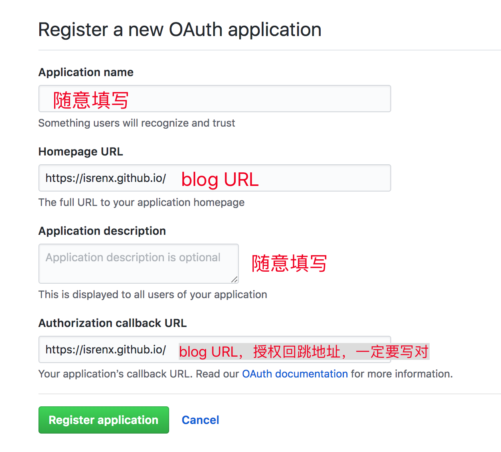
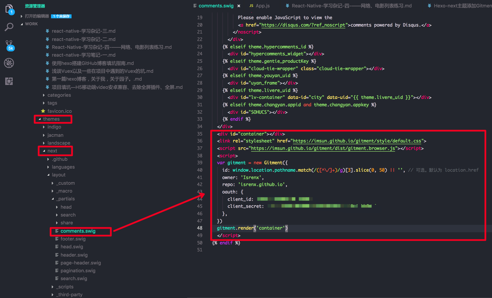
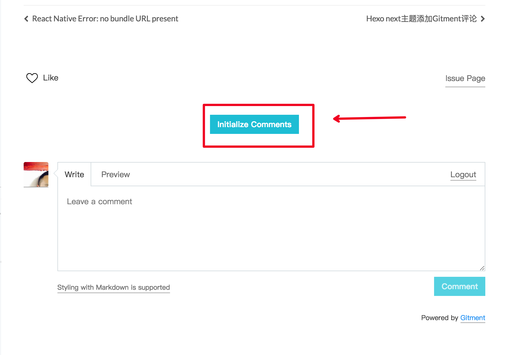
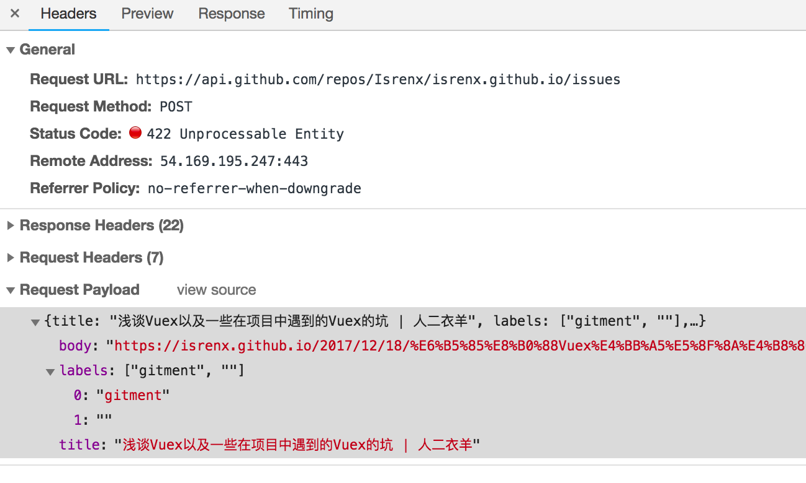
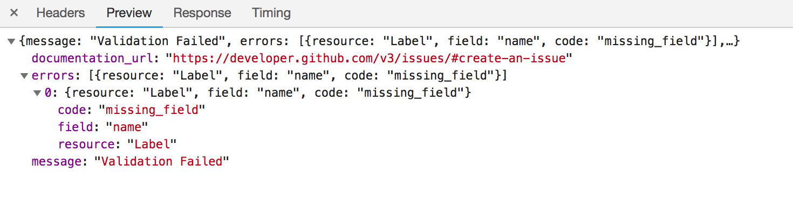

去年最初倒腾这个blog的时候，国内还能正常访问来必力，来必力用来做评论虽然没有之前网易出的那个更加符合我们国内用户的习惯。
可惜这会来必力使用科学上网的方式访问加载也有问题了。
重新捡起这个blog的时候，有很多hexo的东西都忘了，在新电脑上又折腾了一番，幸好之前有笔记，所以捡起来也快。
在这个过程中，了解到现在用gitment做这种单页blog最适合，一起都依赖github。不过也还是要注意不要浪费github资源。毕竟听说现在各种“职业”的同学都来用github了。
Gitment是基于GitHub Issues评论系统做的，所以强依赖github。GitHub blog单页直接跳转GitHub授权很方便。
一、接入前准备
1.注册OAuth Application
Register a new OAuth application—>先到这里创建一个新的OAuth Application。

创建完成之后会生成Client ID和Client Secret；
2.引用gitment
找到自己的主题文件路径，然后在页面里引用gitment代码。next主题没有在配置里直接引用gitment，需要自己手动在页面文件里头引用。在next –> layout –> _partials –> comments.swig里面引入下面即可：

注：根据自己的主题去引用代码，如果主题已经有gitment相应的配置，那么就不需要再引用代码，直接配置相应的client id, client secret等设置就可以。是否有配置可以看主题配置文件_config.yml
3.页面初始化
根据上面的步骤操作完成之后将代码push上去，然后在文章页面进行初始化操作；

踩坑
问题：页面初始化gitment失败，请求https://api.github.com/repos/Isrenx/isrenx.github.io/issues报错，status code为422;


分析：gitment是基于GitHub Issues做的，初始化gitment的本质是发送一个github提供的api请求去创建一个issues。gitment默认的issuestitle是new Gitment时设置的id。默认是location.href，中文标题还会转义。而GitHub Issues的title是有长度限制的，如果我们的文章名字过长就会导致创建issues失败。
解决：
1.id字段传值可以使用<% page.date %>,通过时间作为issues标题。但是这个方法有限制，像next主题使用的是swig为后缀，在使用page.date会报错，不能使用；
2. 因为我的文章标题名字都比较长，即使用`window.location.pathname`也还是过长，所以我用正则(`window.location.pathname.match(/([^\/]+)/g)[3].slice(0, 50)`)去选取其中一部分，能够让我区别每篇文章就行；
注：解决方法其实就是围绕id传值的长度来做限制，其实方法有很多种，看自己怎样去选能够区别每篇文章的标题就行